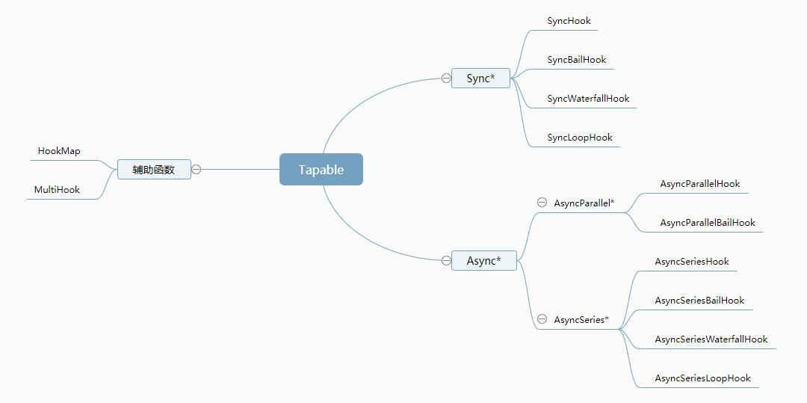

wepback 是目前前端构建生产环境应用程序的热门工具, 它采用基于事件流的机制, 将各个插件串联起来完成相关的功能, compiler 模块是 wepback 的主要引擎, 它扩展(extend)自 Tapable 类, 用来注册和调用插件.
Tapable 是一个用于事件发布订阅执行的插件架构, 类似于 Node.js 的 EventEmitter 库.

1 2 3 4 5 6 7 8 9 10 11 12 13 14 const { SyncHook, SyncBailHook, SyncWaterfallHook, SyncLoopHook, AsyncParallelHook, AsyncParallelBailHook, AsyncSeriesHook, AsyncSeriesBailHook, AsyncSeriesWaterfallHook, AsyncSeriesLoopHook, HookMap, MultiHook, } = require ('tapable' );
钩子分类 执行方式 Basic Hook (基础) 钩子调用所在行中调用的每个钩子函数
WaterFall (瀑布) 与基础钩子不同, 它将一个返回值从每个函数传递到下一个函数
Bail (保证) 钩子函数执行中, 只要其中有一个钩子返回 非 undefined 时, 则剩余的钩子函数不再执行
Loop (循环) 循环执行钩子, 当循环钩子函数返回 非 undefined 时, 则从第一个钩子重新启动, 直到所有的钩子返回 undefined 时结束
定义类型 Sync 同步 同步钩子只能使用 tap 注册钩子, 使用 call | callAsync 调用钩子
1 2 3 myHooks.tap('x' , () => {}); myHooks.call('x' ); myHooks.callAsync('x' , () => {});
AsyncSeries 异步串行 异步串行钩子可以使用 tap | tapSync | tapPromise 注册钩子, 使用 call | callAsync | promise 调用钩子
1 2 3 4 myHooks.tapAsync('x' , (callback ) => { callback(); }); myHooks.callAsync('x' , () => {});
AsyncParallel 异步并行 异步并行钩子可以使用 tap | tapSync | tapPromise 注册钩子, 使用 call | callAsync | promise 调用钩子
1 2 3 4 5 6 myHooks.tapPromise('x' , () => { return new Promise ((resolve, reject ) => { resolve(); }); }); myHooks.promise('x' ).then((res ) => {});
使用 同步钩子 SyncHook 钩子函数依次全部执行，如果有 hook 回调，则最后执行
1 2 3 4 5 6 7 8 9 10 11 12 13 14 15 16 17 18 19 20 21 22 23 24 25 26 27 28 29 30 31 32 33 34 35 36 37 38 39 40 41 42 const { SyncHook } = require ('tapable' );const syncHook = new SyncHook(['name' ]);syncHook.tap('x' , (name ) => { console .log('x done ' , name); }); syncHook.tap('y' , (name ) => { console .log('y done ' , name); }); syncHook.call('call' ); syncHook.callAsync('callAsync' , () => { console .log('syncHook.callAsync' ); }); class MySyncHook constructor (args ) this .args = args; this .tasks = []; } tap (name, task ) this .tasks.push(task); } call (...args ) if (args.length < this .args.length) throw new Error ('参数不足' ); args = args.slice(0 , this .args.length); this .tasks.forEach((task ) => task(...args)); } }
SyncBailHook 钩子函数依次执行, 如果某个钩子函数的返回值为 非 undefined，则后面的钩子不再执行，如果有 hook 回调，则最后执行
1 2 3 4 5 6 7 8 9 10 11 12 13 14 15 16 17 18 19 20 21 22 23 24 25 26 27 28 29 30 31 32 33 34 35 36 37 38 39 40 41 42 const { SyncBailHook } = require ('tapable' );const syncBailHook = new SyncBailHook(['name' ]);syncBailHook.tap('x' , (name ) => { console .log('x done ' , name); return 'undefined' ; }); syncBailHook.tap('y' , (name ) => { console .log('y done ' , name); }); syncBailHook.call('call' ); syncBailHook.callAsync('callAsync' , () => { console .log('syncBailHook.callAsync' ); }); class MySyncBailHook constructor (args ) this .args = args; this .tasks = []; } tap (name, task ) this .tasks.push(task); } call (...args ) args = args.slice(0 , this .args.length); let i = 0 , ret; do { ret = this .tasks[i++](...args); } while (!ret); } }
SyncWaterfallHook 钩子函数依次全部执行，上一个钩子函数的返回值作为下一个钩子函数的参数，如果有 hook 回调，则最后执行
1 2 3 4 5 6 7 8 9 10 11 12 13 14 15 16 17 18 19 20 21 22 23 24 25 26 27 28 29 30 31 32 33 34 35 36 37 38 39 40 41 const { SyncWaterfallHook } = require ('tapable' );const syncWaterfallHook = new SyncWaterfallHook(['name' ]);syncWaterfallHook.tap('x' , (name ) => { console .log('x done ' , name); return `${name} from x...` ; }); syncWaterfallHook.tap('y' , (name ) => { console .log('y done ' , name); }); syncWaterfallHook.call('call' ); syncWaterfallHook.callAsync('callAsync' , () => { console .log('syncWaterfallHook.callAsync' ); }); class MySyncWaterfallHook constructor (args ) this .args = args; this .tasks = []; } tap (name, task ) this .tasks.push(task); } call (...args ) args = args.slice(0 , this .args.length); let [first, ...others] = this .tasks; return reduce((ret, task ) => task(ret), first(...args)); } }
SyncLoopHook 钩子函数依次全部执行，当循环钩子中回调函数返回非 undefined 时，钩子将从第一个重新启动，直到所有的钩子返回非 undefined 时结束 如果有 hook 回调，则最后执行
1 2 3 4 5 6 7 8 9 10 11 12 13 14 15 16 17 18 19 20 21 22 23 24 25 26 27 28 29 30 31 32 33 34 35 36 37 38 39 40 41 42 43 44 45 46 47 48 49 50 51 52 53 54 55 56 57 58 59 60 61 62 63 64 65 66 67 68 69 70 71 72 73 74 75 76 const { SyncLoopHook } = require ('tapable' );const syncLoopHook = new SyncLoopHook(['name' ]);syncLoopHook.tap('x' , (name ) => { let flag = Math .floor(Math .random() * 10 ); if (flag > 5 ) { console .log('x done ' , name, flag); return undefined ; } else { console .log('x loop ' , name, flag); return 'undefined' ; } }); syncLoopHook.tap('y' , (name ) => { let flag = Math .floor(Math .random() * 15 ); if (flag > 10 ) { console .log('y done ' , name, flag); return undefined ; } else { console .log('y loop ' , name, flag); return 'undefined' ; } }); syncLoopHook.tap('z' , (name ) => { console .log('z done ' , name); return undefined ; }); syncLoopHook.call('call' ); syncLoopHook.callAsync('callAsync' , () => { console .log('syncLoopHook.callAsync' ); }); class MySyncLoopHook constructor (args ) this .args = args; this .tasks = []; } tap (name, task ) this .tasks.push(task); } call (...args ) args = args.slice(0 , this .args.length); this .tasks.forEach((task ) => { let ret; do { ret = this .task(...args); } while (ret === true || !(ret === undefined )); }); } }
异步并行 AsyncParallelHook 钩子函数异步并行全部执行，所有钩子回调执行完后，hook 回调执行
1 2 3 4 5 6 7 8 9 10 11 12 13 14 15 16 17 18 19 20 21 22 23 24 25 26 27 28 29 30 31 32 33 34 35 36 37 38 39 40 41 42 43 44 45 46 47 48 49 50 51 52 53 54 55 56 57 58 59 60 61 62 63 64 65 66 67 68 69 70 71 72 73 74 75 76 77 78 79 80 81 const { AsyncParallelHook } = require ('tapable' );const asyncParallelHook = new AsyncParallelHook(['name' ]);asyncParallelHook.tapAsync('x' , (name, callback ) => { console .log('x done ' , name); setTimeout (() => { console .log('x done setTimeout 5s ' , name); callback(); }, 5000 ); }); asyncParallelHook.tapAsync('y' , (name, callback ) => { console .log('y done ' , name); setTimeout (() => { console .log('y done setTimeout 2s ' , name); callback(); }, 2000 ); }); asyncParallelHook.tapAsync('z' , (name, callback ) => { console .log('z done ' , name); setTimeout (() => { console .log('z done setTimeout 3s ' , name); callback(); }, 3000 ); }); asyncParallelHook.tapPromise('w' , (name ) => { return new Promise ((resolve, reject ) => { console .log('w done ' , name); setTimeout (() => { console .log('w done setTimeout 8s' , name); resolve('hello world' ); }, 8000 ); }); }); asyncParallelHook.callAsync('callAsync' , () => { console .log('asyncParallelHook.callAsync' ); }); class MyAsyncParallelHook constructor (args ) this .args = args; this .tasks = []; } tabAsync (name, task ) this .tasks.push(task); } callAsync (...args ) let finalCallback = args.pop(); args = args.slice(0 , this .args.length); let i = 0 ; let done = () => { if (++i === this .tasks.length) { finalCallback(); } }; this .tasks.forEach((task ) => task(...args, done)); } }
AsyncParallelBailHook 钩子函数全部异步并行执行, 只要有一个钩子返回了非 undefined 值时， hook 回调会立即执行
1 2 3 4 5 6 7 8 9 10 11 12 13 14 15 16 17 18 19 20 21 22 23 24 25 26 27 28 29 30 31 32 33 34 35 36 37 38 const { AsyncParallelBailHook } = require ('tapable' );const asyncParallelBailHook = new AsyncParallelBailHook(['name' ]);asyncParallelBailHook.tapAsync('x' , (name, callback ) => { console .log('x done ' , name); setTimeout (() => { console .log('x done setTimeout 1s' ); callback(); }, 1000 ); }); asyncParallelBailHook.tapAsync('y' , (name, callback ) => { console .log('y done ' , name); setTimeout (() => { console .log('y done setTimeout 2s' ); callback('undefined' ); }, 2000 ); }); asyncParallelBailHook.tapAsync('z' , (name, callback ) => { console .log('z done ' , name); setTimeout (() => { console .log('z done setTimeout 3s' ); callback(); }, 3000 ); }); asyncParallelBailHook.callAsync('callAsync' , () => { console .log('asyncParallelBailHook.callAsync' ); });
异步串行 AsyncSeriesHook 钩子函数全部异步串行执行，执行顺序按照注册顺序执行，上一个钩子执行结束后下一个执行开始, hook 回调最后执行
1 2 3 4 5 6 7 8 9 10 11 12 13 14 15 16 17 18 19 20 21 22 23 24 25 26 27 28 29 30 31 32 33 34 35 36 37 38 const { AsyncSeriesHook } = require ('tapable' );const asyncSeriesHook = new AsyncSeriesHook(['name' ]);asyncSeriesHook.tapAsync('x' , (name, callback ) => { console .log('x done ' , name); setTimeout (() => { console .log('x done setTimeout 2s' ); callback(); }, 2000 ); }); asyncSeriesHook.tapAsync('y' , (name, callback ) => { console .log('y done ' , name); setTimeout (() => { console .log('y done setTimeout 1s' ); callback(); }, 1000 ); }); asyncSeriesHook.tapAsync('z' , (name, callback ) => { console .log('z done' , name); setTimeout (() => { console .log('z done setTimeout 3s' ); callback(); }, 3000 ); }); asyncSeriesHook.callAsync('callAsync' , () => { console .log('asyncSeriesHook.callAsync' ); });
AsyncSeriesBailHook 钩子函数全部异步串行执行，只要有一个钩子返回了 非 undefined 值时，hook 回调立即执行，其他钩子有可能不再执行
1 2 3 4 5 6 7 8 9 10 11 12 13 14 15 16 17 18 19 20 21 22 23 24 25 26 27 28 29 30 31 32 33 34 35 36 const { AsyncSeriesBailHook } = require ('tapable' );const asyncSeriesBailHook = new AsyncSeriesBailHook(['name' ]);asyncSeriesBailHook.tapAsync('x' , (name, callback ) => { console .log('x done ' , name); setTimeout (() => { console .log('x done setTimeout 2s' ); callback(); }, 2000 ); }); asyncSeriesBailHook.tapAsync('y' , (name, callback ) => { console .log('y done ' , name); setTimeout (() => { console .log('y done setTimeout 1s' ); callback('undefined' ); }, 1000 ); }); asyncSeriesBailHook.tapAsync('z' , (name, callback ) => { console .log('z done ' , name); setTimeout (() => { console .log('z done setTimeout 3s' ); callback(); }, 3000 ); }); asyncSeriesBailHook.callAsync('callAsync' , () => { console .log('asyncSeriesBailHook.callAsync' ); });
AsyncSeriesWaterfallHook 钩子函数全部异步串行执行, 上一个钩子的返回的结果作为下一个钩子的参数，hook 回调在所有钩子回调返回后执行
1 2 3 4 5 6 7 8 9 10 11 12 13 14 15 16 17 18 19 20 21 22 23 24 25 26 27 28 29 30 31 32 33 34 35 const { AsyncSeriesWaterfallHook } = require ('tapable' );const asyncSeriesWaterfallHook = new AsyncSeriesWaterfallHook(['name' ]);asyncSeriesWaterfallHook.tapAsync('x' , (name, callback ) => { console .log('x done ' , name); setTimeout (() => { console .log('x done setTimeout 1s' ); callback(null , ' from x... ' ); }, 1000 ); }); asyncSeriesWaterfallHook.tapAsync('y' , (name, callback ) => { console .log('y done ' , name); setTimeout (() => { console .log('y done setTimeout 2s' ); callback(null , ' from y... ' ); }, 2000 ); }); asyncSeriesWaterfallHook.tapAsync('z' , (name, callback ) => { console .log('z done ' , name); callback(' from z...' ); }); asyncSeriesWaterfallHook.callAsync('callAsync' , (...args ) => { console .log('asyncSeriesWaterfallHook.callAsync' , args); });
AsyncSeriesLoopHook 钩子函数全部异步串行执行，当循环钩子中回调函数返回非 undefined 时，钩子将从第一个重新启动，直到所有的钩子返回非 undefined 时结束，hook 回调最后执行
1 2 3 4 5 6 7 8 9 10 11 12 13 14 15 16 17 18 19 20 21 22 23 24 25 26 27 28 29 30 31 32 33 34 35 36 37 38 39 40 41 42 43 44 45 46 47 48 49 50 51 52 53 54 55 56 57 58 59 60 61 62 63 64 65 66 67 const { AsyncSeriesLoopHook } = require ('tapable' );const asyncSeriesLoopHook = new AsyncSeriesLoopHook(['name' ]);asyncSeriesLoopHook.tapAsync('x' , (name, callback ) => { console .log('x done ' , name); setTimeout (() => { console .log('x done setTimeout 1s' ); let flag = Math .floor(Math .random() * 10 ); if (flag > 5 ) { console .log('x done ' , name, flag); callback(null , undefined ); } else { console .log('x loop ' , name, flag); callback(null , 'undefined' ); } }, 1000 ); }); asyncSeriesLoopHook.tapAsync('y' , (name, callback ) => { console .log('y done ' , name); setTimeout (() => { console .log('y done setTimeout 2s' ); let flag = Math .floor(Math .random() * 15 ); if (flag > 10 ) { console .log('y done ' , name, flag); callback(null , undefined ); } else { console .log('y loop ' , name, flag); callback(null , 'undefined' ); } }, 2000 ); }); asyncSeriesLoopHook.tapAsync('z' , (name, callback ) => { console .log('z done ' , name); setTimeout (() => { console .log('z done setTimeout 3s' ); callback(); }, 3000 ); }); asyncSeriesLoopHook.callAsync('callAsync' , (...args ) => { console .log('asyncSeriesLoopHook.callAsync' , args); });
拦截器
拦截器使用 intercept 方法注册, 在钩子注册, 调用过程中触发
call: (…args) => void
tap: (tap: Tap) => void
loop: (…args) => void
register: (tap: Tap)=> Tap | undefined
Context
1 2 3 4 5 6 myHooks.intercept({ context: true , tap: (context, tapInfo ) => { console .log(context, tapInfo); }, });
1 2 3 4 5 6 7 8 9 10 11 12 13 14 15 16 17 18 19 20 21 22 23 24 25 26 27 28 29 30 31 32 33 34 35 36 37 38 39 const asyncParallelHook = new AsyncParallelHook(['name' ]);asyncParallelHook.intercept({ call: (...args ) => { console .log('asyncParallelHook intercept call ' , args); }, tap: (...args ) => { console .log('asyncParallelHook intercept tap ' , args); }, }); asyncParallelHook.tapAsync('x' , (name, callback ) => { console .log('x done ' , name); setTimeout (() => { console .log('x done setTimeout 2s' ); callback(); }, 2000 ); }); asyncParallelHook.tapAsync('y' , (name, callback ) => { console .log('y done ' , name); setTimeout (() => { console .log('y done setTimeout 5s' ); callback(); }, 5000 ); }); asyncParallelHook.callAsync('callAsync' , () => { console .log('asyncParallelHook.callAsync' ); });
辅助函数 HookMap 将 hook 分组，方便 hook 组批量调用
1 2 3 4 5 6 7 8 9 10 11 12 13 14 15 16 17 18 19 20 const { HookMap, SyncHook } = require ('tapable' );const hookMap = new HookMap((key ) => new SyncHook(['name' ]));hookMap.for('key1' ).tap('x' , (name ) => { console .log('key1-x ' , name); }); hookMap.for('key1' ).tap('y' , (name ) => { console .log('key1-y ' , name); }); hookMap.for('key2' ).tap('z' , (name ) => { console .log('key2-z ' , name); }); hookMap.get('key1' ).call('call' );
MultiHook 向 hook 批量注册钩子函数
1 2 3 4 5 6 7 8 9 10 11 12 13 14 15 16 17 18 19 20 const { MultiHook, SyncHook, SyncBailHook } = require ('tapable' );const multiHook = new MultiHook([new SyncHook(['name' ]), new SyncBailHook(['name' ])]);multiHook.tap('plugin' , (name ) => { console .log('multiHook plugin ' ); }); Array .prototype.forEach.call(multiHook.hooks, (hooks ) => { hooks.callAsync('multiHook.hooks.call ' , () => { console .log('hooks.callAsync ' ); }); });